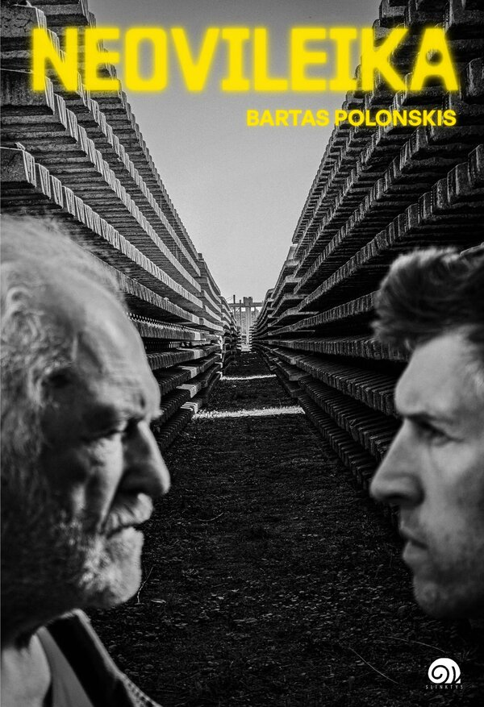
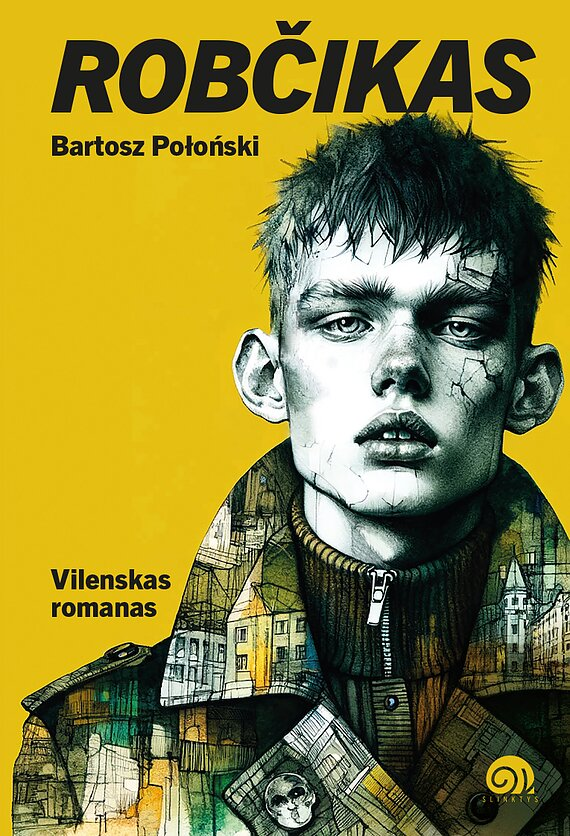
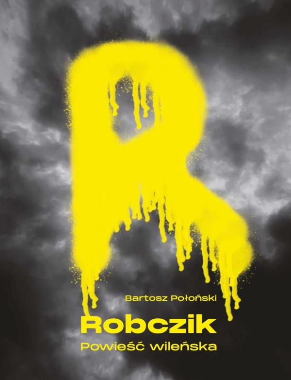
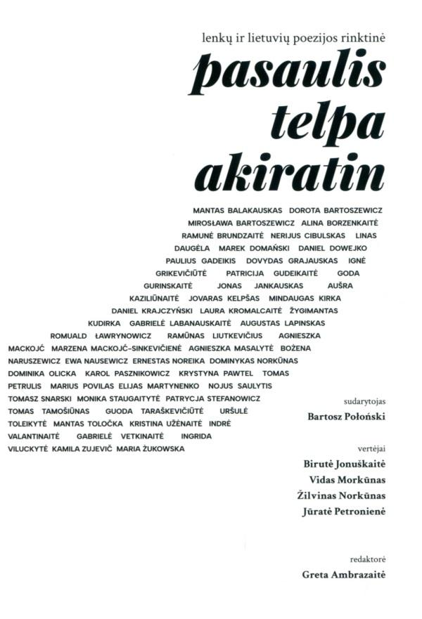

Neovileika
Short stories · as Bartas Polonskis
Short stories about a past that keeps coming back: through family secrets, identity crises and the technology we live with.
Bartosz Połoński was born in Vilnius, studied in Poland and has worked in the United States.
His debut novel, Robczik. Powieść wileńska (2023), follows a group of Polish-speaking high-school students in Vilnius in the 2000s. Written in the city's own street language, a mix of Polish, Lithuanian, youth slang, Russian and English, it shows contemporary Vilnius and its young people without nostalgic myths. The novel was published in Polish by Części Proste and in Lithuanian, as Robčikas: vilenskas romanas, by Slinktys. The Lithuanian edition is also available as an audiobook, and he adapted it himself for the stage of the Polish Theatre in Vilnius.
Neovileika, his new collection of short stories written in Lithuanian as Bartas Polonskis, is about a past that keeps coming back: through family secrets, identity crises and the technology we live with.

Short stories · as Bartas Polonskis
Short stories about a past that keeps coming back: through family secrets, identity crises and the technology we live with.

Vilenskas romanas
The Lithuanian translation, also available as an audiobook.

Powieść wileńska
The original Polish edition.

Pojemny horyzont · Lenkų ir lietuvių poezijos rinktinė
A bilingual anthology of 50 young Polish and Lithuanian poets writing in Lithuania after 1990, in three parts: Transgression, Relations and Identity. The book opens from both ends, one side in Lithuanian and the other in Polish, and the two languages meet in the middle.